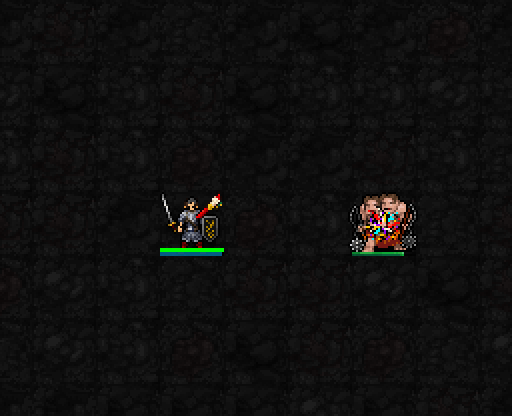
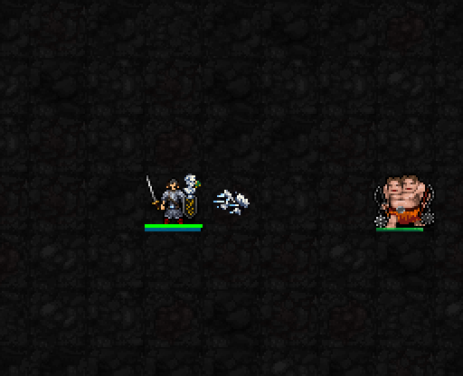
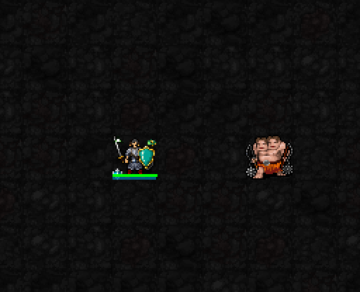

회화 · 채색 폭발

사거리5칸 내 채색된 적을 골라, 해당 적의 채색을 모두 소모하고 주변1칸(3×3)을 폭발시킵니다.
피해: 2d(8+⌊I/2⌋)+6×채색 수
I=12·3중첩: 2d14+18 → 20~46 · 평균33 (감쇠 전).
범위 안에 본인이 있으면 본인도 피해를 받습니다.
회화 가호 회복: 사용 시작부터5턴, 시전 완료 직후4턴 남음. 그동안 회화의 채색·추가 피해도 쉽니다.
현재 전시 중인 작품에 맞춰 세 가지 권능 중 하나를 사용합니다.
해금: 신앙 ★★★75 · 최소 기도술 제한 없음
공통 비용: MP3 · 신앙3 · 행동1턴
1성: 붓·은빛 조각상·옥색 공예 문양 확정. 아래는 현재 3성 효과의 새 엔진 캡처입니다.

사거리5칸 내 채색된 적을 골라, 해당 적의 채색을 모두 소모하고 주변1칸(3×3)을 폭발시킵니다.
피해: 2d(8+⌊I/2⌋)+6×채색 수
I=12·3중첩: 2d14+18 → 20~46 · 평균33 (감쇠 전).
범위 안에 본인이 있으면 본인도 피해를 받습니다.
회화 가호 회복: 사용 시작부터5턴, 시전 완료 직후4턴 남음. 그동안 회화의 채색·추가 피해도 쉽니다.

선택한 방향으로 폭1칸·길이3칸의 직선 파동. 맞은 적에게 피해를 주고 살아 있으면 뒤로1칸 밀어냅니다. 벽·빈칸 여부에 따라 이동이 막힐 수 있습니다.
피해: 3d(6+⌊I/3⌋)+⌊I/2⌋
I=12: 3d10+6 → 9~36 · 평균22.5 (감쇠 전).
조각 가호 회복: 사용 시작부터5턴, 시전 완료 직후4턴 남음. 그동안 조각의 AC 가호도 쉽니다.

피해를 흡수하는 보호막을 얻습니다. 보호량 14+I → I=12에서 26.
시전 완료 후 6+⌊I/6⌋턴 → I=12에서 8턴 유지하거나 보호량을 다 쓰면 소멸.
동시에 독 지속시간5턴 감소, 혼란·감속·공포의 남은 시간 절반 감소.
공예 가호 회복: 사용 시작부터5턴, 시전 완료 직후4턴 남음. 그동안 처치 회복도 쉽니다. 보호막이 남아 있으면 재시전할 수 없습니다.
회화는 몹 중심의 다색 물감 폭발, 조각은 1→2→3칸으로 나가는 은빛 돌조각 파동, 공예는 플레이어 옆 옥색·금빛 보호막입니다. 실제 엔진에서 캡처한 시전 연출이며, 피해·넉백·보호막 흡수의 전 과정을 재생하는 영상은 아닙니다.
특별전: 신앙120 해금 · 최소 기도술 없음 · MP6·신앙12·1턴.
시전 완료 후 6+0.2I턴 → I12에서8.4턴. 종료 후 재사용 대기15턴.
특별전 중 세 전시의 가호를 함께 받고, 전시 선택과 관계없이 세 가지 3성 권능을 사용합니다. 각각 MP3·신앙3·1턴은 별도 지불합니다. 특별전 발동만으로 폭발·파동·보호막이 자동 발생하지는 않습니다.
| 권능 | 5성 강화식 | I=12 예시 |
|---|---|---|
| 회화 | 3d(8+⌊I/2⌋)+6×채색 수 범위 주변2칸 · 자폭 위험 유지 | 3중첩 3d14+18 21~60 · 평균40.5 |
| 조각 | 4d(6+⌊I/3⌋)+⌊I/2⌋ 폭3줄·길이3칸, 밀치기2칸 | 4d10+6 10~46 · 평균28 |
| 공예 | 보호량22+⌊3I/2⌋ 시전 완료 후8+⌊I/6⌋턴 | 40 흡수 · 10턴 |
피해는 AC 적용 전. 공예의 독·혼란·감속·공포 완화 및 각 전시 회복 시간은 유지합니다. 공예 보호막의 남은 지속시간은 특별전 종료와 별개입니다. 5성 이펙트 외형 검토는 아직 진행하지 않았습니다.